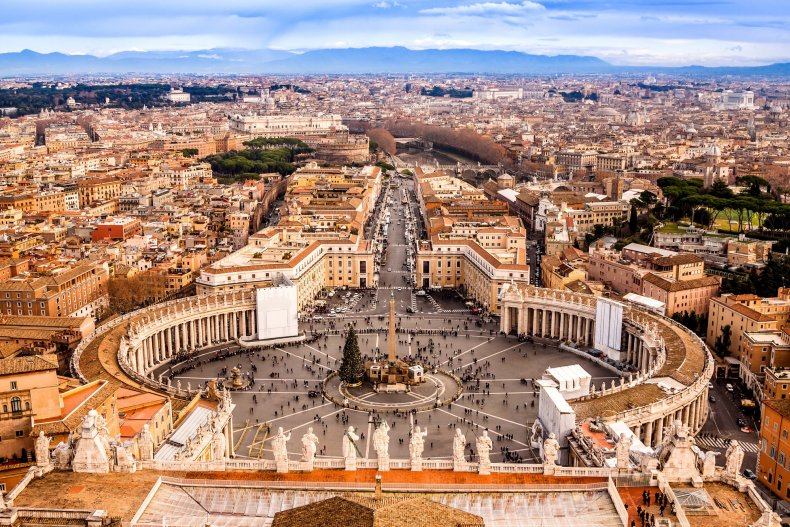

Місце народження: 13 травня 2005; м. Київ
Освіта: Гімназія №178 м. Київ;
НТУУ "КПІ", м. Київ
Хоббі:
Улюбленні фільми:
Рим (італ. Roma, лат. Rome) — столиця Італії з 1870, адміністративний центр провінції Рим та області Лаціо. Населення понад 2,76 млн осіб, це найбільша за територією і кількістю жителів комуна країни. Міська агломерація нараховує до 3,7 млн[1] жителів і є другою за величиною в Італії після Мілана. Рим розташований в центральній частині Апеннінського півострова на річці Тибр, поблизу узбережжя Тірренського моря.
Одне з найдавніших міст світу, столиця Стародавнього Риму (за переказом із 753 до н. е.). Інші назви: «вічне місто», «місто на сімох пагорбах» — спочатку поселення було на пагорбі Палатин, згодом були заселені сусідні пагорби — Капітолій і Квіринал. Дещо пізніше поселення з'явилися на інших 4 пагорбах: Целій, Авентін, Есквілін і Вімінал.
Починаючи з середини 1-го століття, головний осередок західного християнства.
